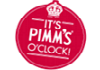
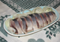

Sallan and Stephen Raoulin häät
(In English)
17. - 19. heinäkuuta, 2015
Storfinnhova Gård, Kemiönsaari, Suomi
Missä?
Kuten ylempänä lukee, paikkana on Storfinnhova Gård, Kemiönsaari, Suomi! Kartta löytyy täältä:
Milloin?
Perjantaina 17 heinäkuuta
- 17:00 – 18:00 Saapuminen paikalle
 18:00 Hää-grillausta ja sauna
18:00 Hää-grillausta ja sauna
- klo 20:00 Sauna-oluet
 22:35 Auringonlasku
22:35 Auringonlasku
Lauantaina 18 heinäkuuta
 4:36 Auringonnousu
4:36 Auringonnousu - 12:00 Hää-brunssi. Saatamme tarjota muutakin kuin silliä
 18:00 Puheet, sormukset ja muu sellainen
18:00 Puheet, sormukset ja muu sellainen - 19:00 Pääasia: illallinen. Silliä kaikille!
- 21:00 Kai pitää olla jotain musiikkia…
 22:33 Auringonlasku
22:33 Auringonlasku
Sunnuntaina 19 heinäkuuta
 00:00 Sylvia Sullivanin syntymäpäivä!
00:00 Sylvia Sullivanin syntymäpäivä!  4:38am Auringonnousu.
4:38am Auringonnousu. 12:00 Nyt pitäisi lähteä…
12:00 Nyt pitäisi lähteä…
FAQ eli UKK
Jos tulemme useammaksi päiväksi, missä nukumme?
Olemme vuokraneet puumajoja ja huonetilaa Storfinnhova Gårdiltä. Kaikille ilmoittautuneille pyritään varaamaan yösija
Pukukoodi?
Tilaisuus ei ole kovin muodollinen. Korkokengät voivat olla huono valinta metsässä, ja ottakaa uimapuku jos tahdotte saunaan!
Pitääkö tuoda lahjoja?
Vain saunatontuille, ei meille, kiitos!
Mitä on ruokana?
Raoul ei ollut tosissaan sillistä. Tarjoilu on kasvissyöjä/vegaaniystävällistä, mutta ilmoitattehan ruokatoiveista ja allergioista
Kuinka paljon ihmisiä on tulossa?
Varmaan noin 30-40
Ovatko he mukavia?
Kyllä
Ok, olen tulossa. Mitä nyt?
Lähetä sähköpostia tai soita meille